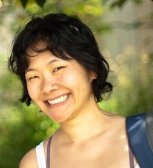
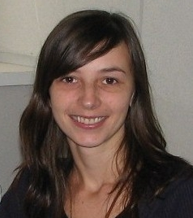

Uaná Tecnologia em Visão e Linguagem
São Paulo, SP, Brasil
A empresa é dirigida por três sócios:
|  |
Celina M. Takemura Doutora em Ciência da Computação (IME-USP, 2008). Especialista em reconhecimento de padrões e gestão de inovação. |
|  |
Lucia Specia Doutora em Ciência da Computação (ICMC-USP, 2007). Especialista em Processamento de Linguagem Natural, especialmente tradução automática. |
| |
Teo E. de Campos Doutor em Engenharia da Informação (University of Oxford, 2007). Especialista em visão computacional e reconhecimento de padrões. |
Missão
Promover e desenvolver tecnologia de ponta para capacitar nossos clientes a se tornarem líderes em seus negócios.
Promover e desenvolver tecnologia de ponta para capacitar nossos clientes a se tornarem líderes em seus negócios.